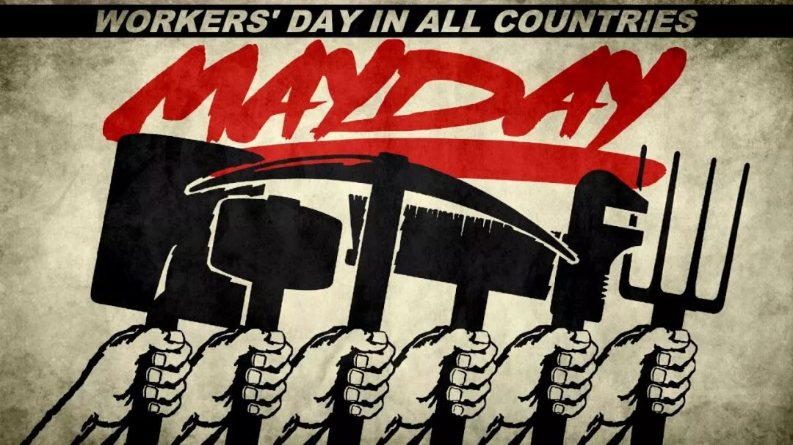

第132个国际劳动节，我们关注就业性别平等

五一国际劳动节是为了纪念1886年美国芝加哥工人大罢工而诞生的，这场自上而下的工人对抗资本家的运动为我们确立了8小时工作制，也在今天依然向我们传递着行动终能带来改变的信念。
然而这场运动也曾是漫长的。“8小时工作制”最初是国际工人联合会在1866年日内瓦会议中提出的，其后20年间经历过无数次规模不等的罢工游行，最终于1886年赢得诉求。
几乎与此同时，1968年的英国，福特公司的女工们高呼“游行不专属于男人，女人也要反抗”。她们带着“同工同酬”的诉求走上街头，抗议工作待遇受到性别歧视，反对女性劳动能力与价值遭受贬损。（推荐《达格南制造》，一部讲述该运动的电影˜）

为纪念劳动者们反抗的胜利，同时也为了保护平等就业权，一群长期关注就业性别歧视的伙伴们在劳动节期间致信7城人社局申请政府信息公开。

政府信息公开是公众了解政府行为的直接途径，也是公众监督政府行为的重要依据。此次信息公开申请面向北京、上海、广州、南京、成都、武汉、杭州7城所辖各区的人力资源与社会保障局（简称“人社局”），目的在于了解人社局自 《就业促进法》生效以来，每年收到的就业性别歧视投诉/举报的案件数量，以及各区人社局对就业性别歧视案件的处理标准及工作安排。
参与者们认为，此次信息公开申请将有助于她们了解人社局的工作情况，以便日后对其提出更加切实可行的意见与监督。
截至目前，通过网络向广州市各区人社局提出申请的伙伴已当即收到［广州政务］的短信回复；通过邮寄方式向北京市各区人社局提出申请的伙伴也已收到部分“案件受理通知书”。更多申请回复将在节后15个工作日内陆续收到，敬请期待。